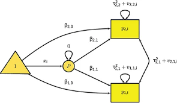
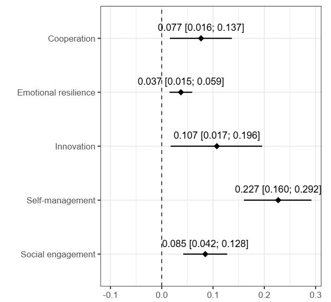
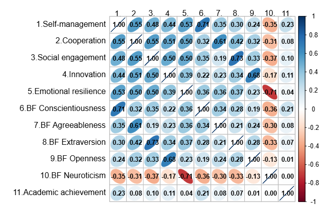
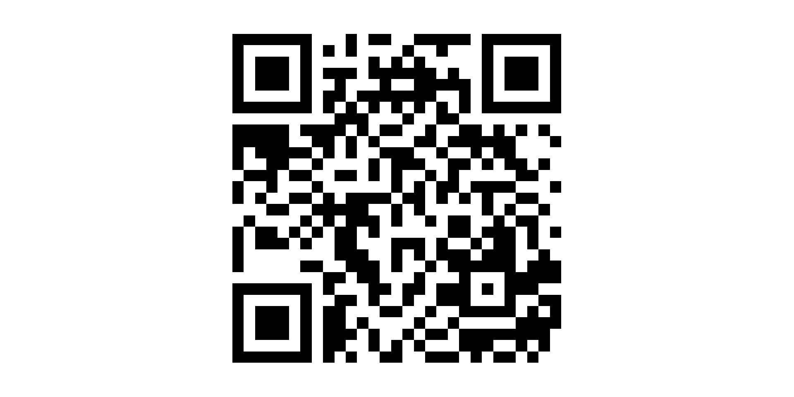

The living SEB project
A living systematic review and meta-analysis for SEB skills
Background
Soft skills
“Noncognitive skills, a construct that nearly everyone can agree is important but no one can agree on how to measure.” (Harden, 2021).
Heckman: (Heckman and Kautz 2012)
PISA: (e.g., OECD 2017)
NRC: (Robles 2012)
MUR: (Ministry of Education, University and Research, MIUR 2018)
EU: (European Commission 2016)
Putting things together
Personality traits represent characteristics patterns of thinking, feeling, and behaving.
What someone tends to do across situations.
Soft skills represent functional capacities to establish and maintain social relationships, regulate emotions, and effectively manage behaviors toward goals and learning.
What someone can do when the situation calls for it.
Traits and skills levels can be congruent or discrepant. For instance, an introvert might be able to (at least in some cases) act as a leader or efficiently speak in public.
From soft to SEB (social, emotional, and behavioral) skills
These represent the abilities to establish and maintain social relationships, regulate emotions, and effectively manage behaviors toward goals and learning (Soto, Napolitano, and Roberts 2021; Napolitano et al. 2021).
- Self-management skills
- Social engagement skills
- Cooperation skills
- Innovation skills
- Emotional resilience skills
Conscientiousness
Extraversion
Agreeableness
Openness
Emotional stability
These domains clearly parallel the Big Five in terms of their cognitive, affective, and behavioral referents.
From soft to SEB (social, emotional, and behavioral) skills

Assessing SEB skills

This approach is designed to better align the measurement method with the construct being assessed.
What we know about SEB skills
SEB skills predict achievement
- At school
- At work
SEB domains have differential predictive power
Skill-trait mismatches predict well-being
Changes in SEB predict changes in outcomes
Laypeople see changing skills as desirable
Changing skills perceived easier than changing traits
Especially for teachers!
It seems actually possible and more feasible to change skills
Rationale
Replication crisis, QRPs…what’s the future like for new frameworks?
State of the things
New opportunities
- We finally have a new integrative and systematic framework
- This framework offers a new measurement tool that should better measure skills
- This framework allows for a distinction between skills and traits
Old problems
It is hard to remain up-to-date with the literature
Meta-analysis and reviews are static, slow, and specific
People can select their preferred results to support their hypotheses
HOW CAN WE MAKE THIS NEW LINE OF RESEARCH TRULY RELIABLE, ACCESSIBLE, AND SCIENTIFIC?
The idea
A living systematic review and meta-analysis: By creating an adaptable infrastructure for evidence integration, we hope to support more transparent, efficient, and rigorous scientific progress. This initiative lays the foundation not only for SEB research but also as a model for other emerging fields to follow—advancing toward a new era of living meta-synthesis in psychology.
Structures and aims
Three core rationales:
Prevent fragmentation
Enable timely integration
Advance open science
Three main aims:
- Review aim: provide a living, organized cartography of SEB literature, freely accessible and filterable;
- Meta-analytic aim: continually synthesize (cross-sectional) associations between SEB skills and all other constructs and variables measured alongside;
- Open science aim: open materials and the Living SEB App to enable replication, rapid evidence checks, preregistration support, and community contributions.
Method
see preregistration
Search strategy (WOS + Scopus)
- Citation-chaining approach:
- Seminal theoretical papers (Soto, Napolitano, and Roberts 2021)
- Measurement and adaptations
- Original measurement paper (Soto et al. 2022)
- Language adaptations (Lechner et al. 2022) (Feraco et al. 2024) (Postigo et al. 2024)
- Shorter versions (Sewell et al. 2024)
Updating the search
- The query is replicated every first working day of each month
- Search updates
| Database | String |
|---|---|
| Scopus |
|
| Web Of Science |
|
Eligibility criteria - review
Review eligibility: Citations are included in the review synthesis if:
The main topic of the paper is SEB skills.
The paper provides substantial theoretical and quantitative information about SEB skills.
Exclusion from the review. Citations are completely excluded from the review synthesis if:
- They were not focusing on or adopting the SEB skill framework or emerging frameworks based on it.
- They were published as books;
- They were published in languages that were not comprehensible for the authors;
- Refer to the SEB framework, but focus on different frameworks, such as the OECD or CASEL.
Eligibility criteria - meta-analysis
Meta analysis eligibility. Citations are included in the meta-analysis if:
The study assessed SEB skills using a validated skill-based assessment referencing to the SEB framework;
The study reports correlations at baseline or the data could be reduced to correlations or obtained by the authors;
The study referred to original data that are not already reported in other included studies;
The population study was either the general population or a clinical population with mild/moderate mental health issues.
Outcomes
This review is not limited to any outcome, but all possible outcomes will be coded and included. Outcomes will be treated in the following way:
Broad category: Each outcome is assigned to the a broad category. Examples might be skills, mental health, school, demographic variables, job, personality traits…
Second-level category: Subsequently, within each broad category, each outcome is assigned to a more specific category. For instance, the broad ‘traits’ category may include the big five, hexaco, character strengths. School may include academic achievement, learning factors.
Specific construct: Finally, each construct is labeled with its own construct label (e.g., extraversion, self-management).
Meta-analytic methods
Only cross-sectional data (now)
Three-level models for correlation coefficients

Meta-SEM for pooled correlations and ‘advanced’ multivariate analyses

How does it work?
Different resources
- An open repository (including these slides)
- The Living SEB App
- With instructions
- Adaptable reports of meta-analytic results
- Review of the literature
- A living paper
- Anything else?
Tutorial (momentary) results
Do SEB skills predict (correlate with) academic achievement?
Database
In general
- Records identified: 259
- Records for review: 26
- Records for meta-analysis: 15
- 22 samples
- 137-5075 participants per sample (med = 702)
- 17.014 correlations (SEB = 14.154)
- 5.750 unique associations (SEB = 3.817)
With achievement
- Meta-analysis of correlations:
- Studies: 7
- Samples: 8
- Effects: 40
- Median N = 868 (350-5.075)
- Meta-SEM
- Studies: 13
- Samples: 20
- Effects: 3-19
- Ns: 2712-20.763
Meta-analytic associations
Pooled correlations
Incremental validity
| Domain | Trait | Skill |
|---|---|---|
| Openness - Innovation | 0.22 [0.08; 0.35] | -0.16 [-0.27;-0.04] |
| Conscientiousness - Selfmanagement | 0.08 [-0.01; 0.17] | 0.17 [0.07; 0.27] |
| Extraversion - Social engagement | -0.02 [-0.09; 0.06] | 0.10 [0.04; 0.16] |
| Agreeableness - Cooperation | 0.04 [-0.02; 0.11] | 0.05 [-0.02; 0.12] |
| Neuroticism - Emotional resilience | 0.08 [NA] | 0.06 [NA] |
Some convergence issues but…
Don’t you trust me?
Try it yourself: https://feracoshiny.shinyapps.io/livingSEBapp/
Next steps and open questions
Finalize the app
Possibly find a way to add modules for future development
Longitudinal / intervention data
Non-correlational designs
Add features for other-uploaded data
Publication
Who could accept this and in which format?
Why should we publish it?
Feasibility
Can I (we) keep updating it forever?
Can we involve the community? How?
More? (quality assessment, search string, inclusion criteria..)
References

Lab meeting M&L, 2025-10-15